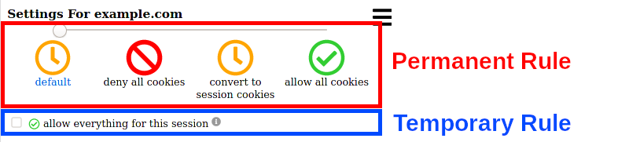

Cookie Ripper Was Updated! 🥳
Version 1.2.0 🎄
- changed the middle option to convert permanent cookies and web storage entries to temporary ones instead of blocking them
- changed initial default behaviour to exactly that
- simplified popup UI
- bugfixes and minor UI improvements
- General system stability improvements to enhance the user's experience
New Popup UI

Version 1.1.0
- support for sameSite cookie property
- fancy tables using tabulator
- UI improvements
- bugfixes
Version 1.0.0 🎉